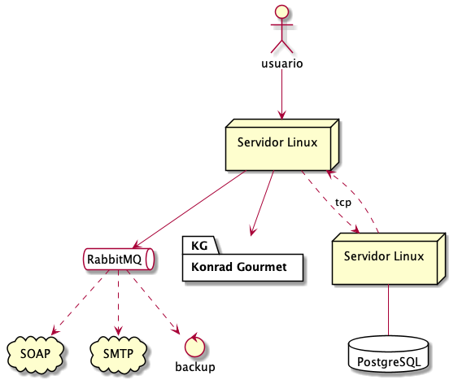

Documento de Arquitectura¶
Intoducción¶
El propósito de este documento es proveer una visión exhaustiva del Sistema de Información de Konrad Gourmet,para lo cual se utilizarán diferentes vistas arquitectónicas . Pretende capturar y plasmar las decisiones que se han hecho en el sistema.
Representación arquitectónica¶
Para describir el sistema, se han desarrollado 4 vistas:
Vista lógica
Vista de procesos
Vista de despliegue
Vista de implementación
Vista lógica¶
El propósito de esta vista es mostrar, a nivel general, los componentes de software utilizados para el funcionamiento del sistema. Para resaltar, se utilizara el framework Django como backend, puesto que tiene ya bien integrados las funcionalidades estipuladas en los RNF como autenticación, cifrado, capacidad para activar auditoría, etc. Además, en el front-end se utilizará un framework de Javascript: Vue.js, por su ligereza y facilida de integración con Django. Los componentes de front-end son necesarios para cumplir los RNF de usabilidad.
{kind=link}
Esta es otra forma diferente de ver los componentes. El orden de las capas debe ser entendido como el orden de las llamadas de un componente a otro. Así , la lógica del negocio “llama a” los eventos y no viceversa, etc.
{kind=link}
Vista de despliegue¶
Muestra los nodos significativos de la infraestructura necesaria para el funcionamiento del sistema. Se decidió utilizar un modelo IaS, puesto que sabemos la cantidad de sucursales y usuarios en la central. No se pronostica mucho crecimiento, por lo que la elasticidad de un PaS no se consideró necesaria.
{kind=link}
Vista procesos¶
Los siguientes diagramas de actividad muestran a alto nivel el funcionamiento de algunos casos de uso importantes dentro del sistema. No pretenden ser exhaustivos, sino una guía de como se activan funcionalidades automáticas del sistema que están encapsulados dentro del componente “eventos”.
{kind=link}
UC “Registrar pedido”¶
{kind=link}
UC “Enviar solicitud de cotización”¶
{kind=link}
UC “Validar cotización”¶
Vista implementación¶
Esta vista provee una visión cercana al programador. Los componentes del sistema se expresen en cuanto a sus clases e interfaces principales.
{kind=link}

{kind=link}
{kind=link}